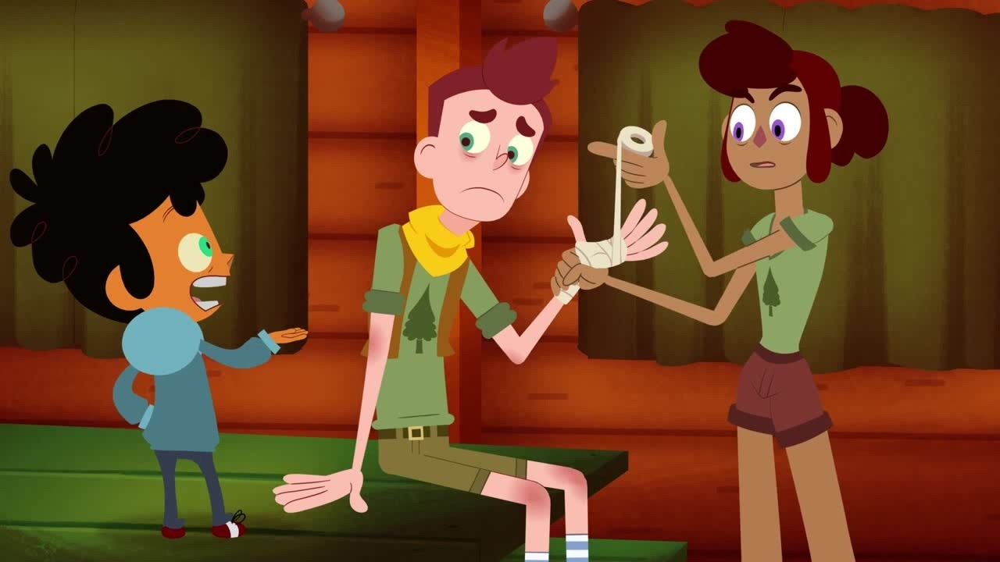
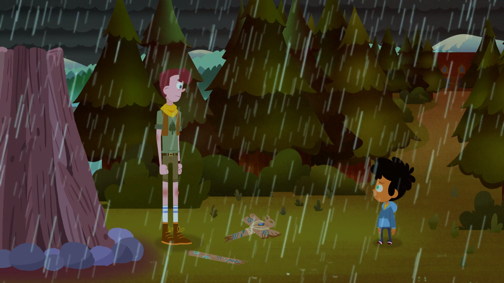
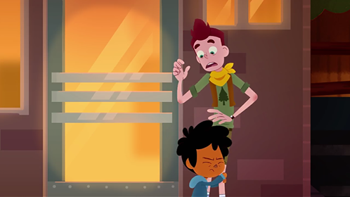

Memorable Moments in Camp Camp
Season 1 Episode 9 - David Gets Hard
In this episode, David tries to toughen himself up for Nurf's (another onee of the campers) behavioral correction camp. Throughout the process of trying to "get hard", David actually ends up getting stabbed twice in both hands by Nurf. There really isn't much about this episode other then the fact that its pretty much based on David trying to help Nurf. The reason I decided to put this on my page is because I thought it was really funny yet disturbing.
Season 1 Episode 12 - The Order of The Sparrow
During this episode, there was a scene where David tells the kids their prize is the bonfire for the Order of the Sparraow, which causes them to get mad. But as David tries to light the fire, it starts raining so everyone starts leaving, besides Max. And the only reason he stays is so that he could tell David to "get with the program" and "the world is stupid" and "their all gonna die someday". That then causes David to take a stand and tell Max that "nobody cares" and "times have changed", but he'll never stop trying because somebody has to. I really like this part because it says alot about David.
Season 2 Episode 12 - Parents' Day
In this episode, it was Parents' Day, which obviously meant that their parents were coming to visit them. Except for Max's parents, Max had told David that his parents weren't coming, but instead of believing him, David yells at Max for having such bad behavior. Gwen then shows David the files that prove Max's parents really don't care. The scene was actually pretty sad, sad enough for Max to even cry. David and Gwen then leave the camp to take Max ot for pizza. Later on as they leave the pizza diner, Max very quickly hugs David, which is pretty surprising considering Max tried to kill Davi. The scene to me is sad, but also kind of nice, which is why I love it.